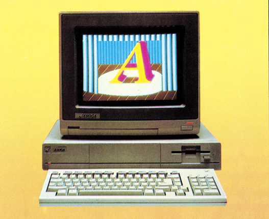
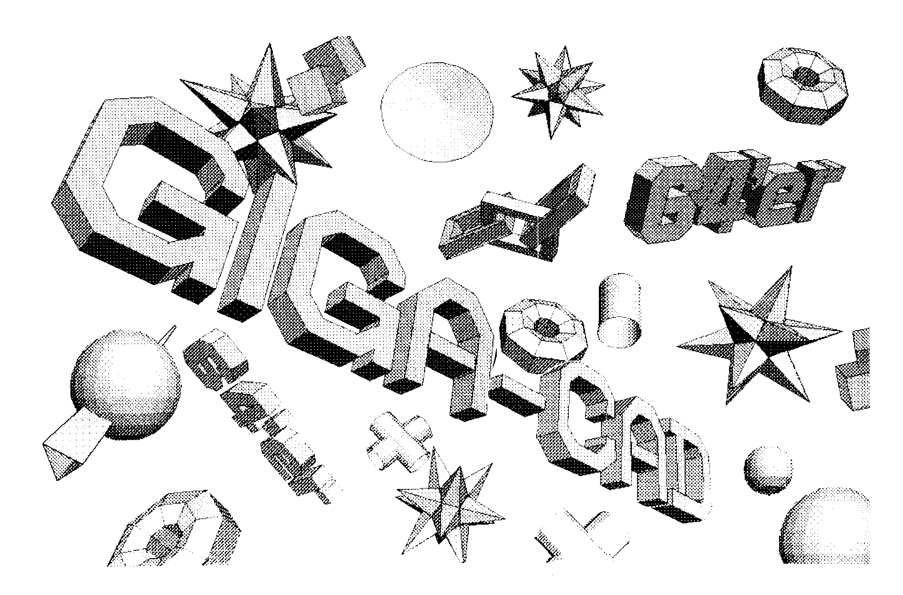

Commodore schlägt zu
Dem Amiga wurden bisher nahezu uneingeschränkt die besten Grafikleistungen für einen 16-Bit-Computer zugestanden — einzig der Preis gab Anlaß zu Kritik. Nun soll der »Traumcomputer« nur noch 3995 Mark kosten.

Commodore hat ab Anfang Mai den Preis für den Amiga drastisch gesenkt. Wurde zur CeBIT in Hannover noch 5595 Mark bekanntgegeben, so soll der Amiga in einer zeitlich limitierten Sonderaktion bis Ende Juni jetzt nur noch 3995 Mark kosten. Commodore Geschäftsführer Deutschland, Winfried Hoffmann: >Wir wollen damit demjenigen, der sich jetzt den Amiga kaufen will, einen Anreiz bieten und die noch in Massenstückzahlen fehlende Software kompensieren. Außerdem sollen die Software-Hersteller aktiviert werden, schneller die in der Entwicklung befindliche und vor allen Dingen noch mehr Software für den Amiga auf den Markt zu bringen.«
Bei dem Amiga für 3995 Mark handelt es sich um die amerikanische Version (allerdings mit 220 V) mit 256 KByte RAM, Monitor, abgesetzter Tastatur, Maus, ein eingebautes 3y2-Zoll-Diskettenlaufwerk mit einer Kapazität von 880 KByte und umfangreicher Software und Literatur. Die mitgelieferte Software besteht aus Kickstart, Workbench, MS-Basic, Tutor, Kaleidoscop, Textcraft (ein Textverarbeitungsprogramm), Graficraft (ein Grafikprogramm) und diversen Demo-Programmen für Musik und Tutor. Die Literatur besteht aus Büchern zur Hardware und zum Basic des Amiga.
Die optionale 256-KByte-Erweiterung (einsteckbar in die Frontseite) kostet 395 Mark.
Ein zweites 3½-Zoll-Disketten-Laufwerk wird 795 Mark kosten. Ein ebenfalls anschließbares 5¼-Zoll-Disketten-Laufwerk soll für 995 Mark erhältlich sein.
Hoffmann: »Mit dieser Aktion soll dem Amiga eine breite Basis in Deutschland geschaffen werden. Unsere Zielgruppen sind nach wie vor die Grafiker, Designer, Künstler, Hochschulen oder Schulen. Der Amiga soll und kann nicht als Heimcomputer bezeichnet werden.«
Dennoch, zu diesem Preis, wird der Amiga auch für den engagierten Anwender im privaten Bereich interessant. Wenn auch Spiele für den Amiga nur eine sekundäre Rolle spielen dürften, so gibt es doch für keinen anderen Computer dieser Klasse eine derartige Vielzahl an sehr guten Programmen — »just for fun«. Sicherlich wird der Amiga als Mediencomputer, das heißt als Schaltzentrale einer kombinierten Computer-Video-, Informations- und Kommunikationsanlage im heimischen Wohnzimmer, den Weg in ein neues Zeitalter der Computertechnologie ebnen. Zu kaufen wird es den Amiga ausschließlich bei Commodore-Fachhändlern geben.
Gerüchte
Nach noch nicht bestätigten Gerüchten soll es den Amiga demnächst mit einer hardwaremäßigen MS-DOS-Karte geben. MS-DOS wurde bisher auf dem Amiga mittels Software emuliert. Dadurch waren Geschwindigkeitseinbußen zu verzeichnen. Bei der Hardware-Lösung soll der Amiga um einiges schneller sein, als ein normaler PC.
Für den C 64 scheint auch ein 3½-Zoll-Laufwerk in Planung zu sein. Liefertermin und Kapazität waren allerdings noch nicht zu erfahren.
Die erfolgreichste Einführung
Nach Aussage von Winfried Hoffmann hat der C 128 die erfolgreichste Einführung eines Heimcomputers in der Geschichte erlebt. Innerhalb von neun Monaten haben weltweit 800 000 C 128 oder C 128 D einen Besitzer gefunden. Das würde die Zahlen des VC 20 oder C 64 bei weitem übertreffen. Allein in Deutschland wären mittlerweile mehr als 75000 C 128 verkauft worden. Der C 64 liegt mittlerweile bei rund 800 000 Systemen.
KEIN GERÜCHT
Frank Elstner, der die Moderation der Amiga-Präsentation in Frankfurt für Deutschland übernommen hatte, hat sich tatsächlich einen Amiga gekauft. Er arbeitet nach eigener Aussage mit wachsender Begeisterung mit dem Amiga.
(aa)Alles für Grafik-Fans

Am 26.5.86 erscheint unser neues Sonderheft 6/86 zum Thema »Grafik auf dem C 64 und C 128«. Der engagierte Grafikprogrammierer erhält hier alles, was sein Herz begehrt. Das Spektrum reicht von Basic-Erweiterungen über Business Grafik bis hin zu Hardcopy-Routinen für jeden Zweck.
Sprite-Programmierung wird genauso berücksichtigt wie Grafik-Erweiterungen für den C 128. Auch diejenigen, die den Plotter 1520 besitzen, kommen mit »Plot-Basic« voll auf ihre Kosten. Einem Programm sei besondere Aufmerksamkeit gewidmet: »Giga-CAD«.
Giga-CAD ist sowohl eines der leistungsfähigsten Programme für den C 64, um computergestützte dreidimensionale Grafiken zu konstruieren. Räumliche Körper lassen sich auf die nur denkbar einfachste Art mit dem Joystick bildschirmorientiert eingeben. Hierbei steht dem Anwender eine komfortable Benutzeroberfläche zur Verfügung. Außerdem kann Giga-CAD Grafiken mit einer Auflösung von 640 x 400 oder 1000 x 640 Punkten berechnen und auf jedem grafikfähigen 8-Nadel-Drucker ausgeben. Aber damit noch nicht genug. Selbst Computerfilme mit 24 Bildern pro Sekunde sind für Giga-CAD kein Problem.
Natürlich gibt es zu diesem Sonderheft Programmservice-Disketten, auf denen sich neben allen Programmen zahlreiche Demos befinden, die die Einarbeitung in Giga-CAD erleichtern.